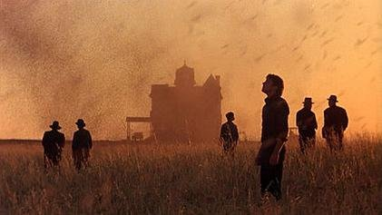

Days of Heaven, Frame
Terrence Malick · 1978 · Film, colour (frame)
In copyright. Look and learn: shown for study, not for download.
Terrence Malick and his cinematographer Néstor Almendros modelled the look of the film on silent films, which often used natural light, and used little studio lighting. Haskell Wexler also photographed part of it. The story is set in Texas, but the exteriors were shot in southwestern Alberta, around the ghost town of Whiskey Gap, four kilometres from the Montana border. Malick then spent two years editing.